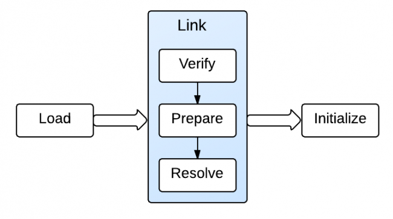

What can we learn from Java HelloWorld?
This is the program every Java programmer knows. It is simple, but a simple start can lead to deep understanding of more complex concepts. In this post I will explore what can be learned from this simple program. Please leave your comments if hello world means more to you.
HelloWorld.java
public class HelloWorld { /** * @param args */ public static void main(String[] args) { // TODO Auto-generated method stub System.out.println("Hello World"); } } |
1. Why everything starts with a class?
Java programs are built from classes, every method and field has to be in a class. This is due to its object-oriented feature: everything is an object which is an instance of a class. Object-oriented programming languages have a lot of advantages over functional programming languages such as better modularity, extensibility, etc.
2. Why there is always a "main" method?
The "main" method is the program entrance and it is static. "static" means that the method is part of its class, not part of objects.
Why is that? Why don't we put a non-static method as program entrance?
If a method is not static, then an object needs to be created first to use the method. Because the method has to be invoked on an object. For the entrance purpose, this is not realistic. We can not get an egg without a chicken. Therefore, program entrance method is static.
The parameter "String[] args" indicates that an array of strings can be sent to the program to help with program initialization.
3. Bytecode of HelloWorld
To execute the program, Java file is first compiled to java byte code stored in the .class file. What does the byte code look like? The byte code itself is not readable. If we use a hex editor, it looks like the following:
{kind=link}
We can see a lot of opcode(e.g. CA, 4C, etc) in the bytecode above, each of them has a corresponding mnemonic code (e.g., aload_0 in the example below). The opcode is not readable, but we can use javap to see the mnemonic form of a .class file.
"javap -c" prints out disassembled code for each method in the class. Disassembled code means the instructions that comprise the Java bytecodes.
javap -classpath . -c HelloWorld
Compiled from "HelloWorld.java" public class HelloWorld extends java.lang.Object{ public HelloWorld(); Code: 0: aload_0 1: invokespecial #1; //Method java/lang/Object."<init>":()V 4: return public static void main(java.lang.String[]); Code: 0: getstatic #2; //Field java/lang/System.out:Ljava/io/PrintStream; 3: ldc #3; //String Hello World 5: invokevirtual #4; //Method java/io/PrintStream.println:(Ljava/lang/String;)V 8: return } |
The code above contains two methods: one is the default constructor, which is inferred by the compiler; the other is the main method.
Below each method, there are a sequence of instructions, such as aload_0, invokespecial #1, etc. What each instruction does can be looked up in Java bytecode instruction listings. For instance, aload_0 loads a reference onto the stack from local variable 0, getstatic fetches a static field value of a class. Notice the "#2" after getstatic instruction points to the run-time constant pool. Constant pool is one of the JVM run-time data areas. This leads us to take a look at the constant pool, which can be done by using "javap -verbose" command.
In addition, each instruction starts with a number, such as 0, 1, 4, etc. In the .class file, each method has a corresponding bytecode array. These numbers correspond to the index of the array where each opcode and its parameters are stored. Each opcode is 1 byte long and instructions can have 0 or multiple parameters. That's why these numbers are not consecutive.
Now we can use "javap -verbose" to take a further look of the class.
javap -classpath . -verbose HelloWorld
Compiled from "HelloWorld.java" public class HelloWorld extends java.lang.Object SourceFile: "HelloWorld.java" minor version: 0 major version: 50 Constant pool: const #1 = Method #6.#15; // java/lang/Object."<init>":()V const #2 = Field #16.#17; // java/lang/System.out:Ljava/io/PrintStream; const #3 = String #18; // Hello World const #4 = Method #19.#20; // java/io/PrintStream.println:(Ljava/lang/String;)V const #5 = class #21; // HelloWorld const #6 = class #22; // java/lang/Object const #7 = Asciz <init>; const #8 = Asciz ()V; const #9 = Asciz Code; const #10 = Asciz LineNumberTable; const #11 = Asciz main; const #12 = Asciz ([Ljava/lang/String;)V; const #13 = Asciz SourceFile; const #14 = Asciz HelloWorld.java; const #15 = NameAndType #7:#8;// "<init>":()V const #16 = class #23; // java/lang/System const #17 = NameAndType #24:#25;// out:Ljava/io/PrintStream; const #18 = Asciz Hello World; const #19 = class #26; // java/io/PrintStream const #20 = NameAndType #27:#28;// println:(Ljava/lang/String;)V const #21 = Asciz HelloWorld; const #22 = Asciz java/lang/Object; const #23 = Asciz java/lang/System; const #24 = Asciz out; const #25 = Asciz Ljava/io/PrintStream;; const #26 = Asciz java/io/PrintStream; const #27 = Asciz println; const #28 = Asciz (Ljava/lang/String;)V; { public HelloWorld(); Code: Stack=1, Locals=1, Args_size=1 0: aload_0 1: invokespecial #1; //Method java/lang/Object."<init>":()V 4: return LineNumberTable: line 2: 0 public static void main(java.lang.String[]); Code: Stack=2, Locals=1, Args_size=1 0: getstatic #2; //Field java/lang/System.out:Ljava/io/PrintStream; 3: ldc #3; //String Hello World 5: invokevirtual #4; //Method java/io/PrintStream.println:(Ljava/lang/String;)V 8: return LineNumberTable: line 9: 0 line 10: 8 } |
From JVM specification: The run-time constant pool serves a function similar to that of a symbol table for a conventional programming language, although it contains a wider range of data than a typical symbol table.
The "#1" in the "invokespecial #1" instruction points to #1 constant in the constant pool. The constant is "Method #6.#15;". From the number, we can get the final constant recursively.
LineNumberTable provides information to a debugger to indicate which line of Java source code corresponds to which byte code instruction. For example, line 9 in the Java source code corresponds to byte code 0 in the main method and line 10 corresponds to byte code 8.
If you want to know more about bytecode, you can create and compile a more complicated class to take a look. HelloWorld is really a start point of doing this.
4. How is it executed in JVM?
Now the question is how JVM loads the class and invoke the main method?
Before the main method is executed, JVM needs to 1) load, 2) link, and 3) initialize the class. 1) Loading brings binary form for a class/interface into JVM. 2) Linking incorporates the binary type data into the run-time state of JVM. Linking consists of 3 steps: verification, preparation, and optional resolution. Verification ensures the class/interface is structurally correct; preparation involves allocating memory needed by the class/interface; resolution resolves symbolic references. And finally 3) initialization assigns the class variables with proper initial values.

This loading job is done by Java Classloaders. When the JVM is started, three class loaders are used:
- Bootstrap class loader: loads the core Java libraries located in the
/jre/lib directory. It is a part of core JVM, and is written in native code. - Extensions class loader: loads the code in the extension directories(e.g.,
/jar/lib/ext). - System class loader: loads code found on CLASSPATH.
So HelloWorld class is loaded by system class loader. When the main method is executed, it will trigger loading, linking, and initialization of other dependent classes if they exist.
Finally, the main() frame is pushed into the JVM stack, and program counter(PC) is set accordingly. PC then indicates to push println() frame to the JVM stack. When the main() method completes, it will popped up from the stack and execution is done.
References:
1. Load
2. Class Loading Mechanism
3. Classloader
<pre><code> String foo = "bar"; </code></pre>
-
yuechang5
-
外语新手
-
我不懂英语的
-
不懂英文怎么办
-
T2T